How to use this lesson
§0 · From last time. Sandboxing isolates execution. Authorisation gates which tools can be called.
Business Scenario
Sherpa can call any tool in its registry. Daniel: "Sherpa should be able to read the GL but not write it. The current registry has no concept of permissions."
Bridge to Topic
Tool authorisation = ACLs per (agent, tool, operation) + audit. Same shape as any RBAC system; the agent is just a new principal type.
Mind Map

Mermaid source
mindmap
root((Auth))
ACL
Agent identity
Tool name
Operation type
OAuth
User-on-behalf-of
Token scopes
Refresh
Audit
Every call
Decision logged
7-year retention
Privilege Separation
CaMeL
Untrusted vs trusted
Elaboration
4.1 Agent identity
Each agent (and each agent invocation) has an identity. The identity has roles; roles grant permissions; permissions allow specific tools.
agent: sherpa
roles: [classifier, read-only-investigator]
permitted_tools:
- query_GL (read)
- query_counterparty (read)
- query_settlement (read)
denied_tools:
- write_GL
- issue_payment
4.2 OAuth for user-context
When a tool acts on behalf of a user, use OAuth. Tool gets a token scoped to the user's permissions. Sherpa querying customer data uses the agent's own OAuth token, not the user's — bypasses confused deputy.
4.3 Audit
Every tool call logged with:
- Agent identity
- Tool name + args
- Authorisation decision (allowed/denied + rule)
- Outcome (success/failure)
- Timestamp
For HSBC: 7-year retention. Audit log is append-only, immutable, signed.
4.4 Privilege separation (CaMeL pattern)
Untrusted input flows through a quarantined sub-pipeline. The agent that processes untrusted input has minimal permissions; only the trusted "supervisor" can authorise high-privilege actions.
Example: incoming customer email → untrusted agent extracts intent → trusted agent (with refund permissions) decides.
Problem Statement
Design the ACL system for Sherpa + the supervisor pattern for Acme support.
Solution Walkthrough
YAML-defined ACLs + middleware that checks before every tool invocation. CaMeL split for Acme: extractor + decider, with strict messaging between them.
Mathematical Foundation
7.1 Attack surface reduction
Each tool an agent shouldn't have = one bug it can't introduce. Conservative defaults (least privilege) reduce the bug surface by an order of magnitude in practice.
Technical Deep-Dive
8.1 The "deny by default" rule
If a tool isn't explicitly permitted, deny. Failing closed is the only sane default for security-critical systems.
8.2 Audit log integrity
Audit logs themselves must be tamper-evident. Append-only storage + cryptographic chaining (each log entry hashes the previous). Detects tampering even if attacker has logs access.
8.3 Rotation
API tokens, OAuth credentials: rotate quarterly. Automate rotation; manual rotation is missed rotation.
8.4 The agent-identity model (who is "the agent"?)
When auditing or authorising, you need to answer: which agent invocation called this tool? Three identity dimensions:
interface AgentIdentity {
agent_id: string; // "sherpa" — the agent type
agent_version: string; // "5.2.1" — the deployed code
invocation_id: string; // "inv_2026-05-19_1714_a3f2" — this specific run
triggered_by: {
type: "scheduled" | "user" | "agent" | "webhook";
user_id?: string; // if user-triggered
parent_invocation?: string; // if agent-triggered
};
roles: string[]; // active roles for this invocation
}
ACLs check roles. Audit logs key on invocation_id. Debugging follows parent_invocation chains.
If you collapse these into a single string identity, you lose the ability to answer common questions ("did Sherpa v5.1 ever issue refunds > $100?").
8.5 The "confused deputy" attack pattern
Classic security pitfall: agent has high privileges (read all customer data); user has limited privileges (read only their own). Attacker tricks agent into reading another user's data because the agent's privilege doesn't check who's asking.
Defence: agents acting on behalf of a user carry the user's effective permissions, not their own elevated ones. For Sherpa, this isn't relevant (no user context). For Acme support agent, it's critical:
async function refundFlow(userId: string, request: RefundRequest) {
const userPermissions = await fetchPermissions(userId);
const agent = new AcmeSupportAgent({
capabilities: intersect(agent.maxCapabilities, userPermissions),
});
return agent.handle(request);
}
The agent's effective permissions are the intersection of the agent's own permissions and the requesting user's. This prevents privilege escalation by impersonation.
8.6 Capability tokens vs role-based access
Two production-grade auth models:
| Model | How it works | When to use |
|---|---|---|
| Role-based (RBAC) | Agent has roles; roles grant tool permissions. | Stable role set; few principals. |
| Capability tokens | Each call carries explicit capability tokens for what it can do. | Dynamic permissions; fine-grained delegation. |
Capability tokens compose better in multi-agent systems: supervisor mints a token granting "refund up to $50 for order X" and passes it to a worker; worker can only refund that specific order, that specific amount. Token expires after use.
8.7 Audit log query patterns
The audit log only earns its keep if it's queryable. Common production queries:
- "All refunds > $100 issued by Sherpa v5.x in Q4 2025"
- "All tool calls from agent invocations triggered by user X"
- "All denied tool calls in the last 7 days, grouped by tool and reason"
- "Mean tool calls per task by month — detecting drift"
Index by: agent_id, invocation_id, tool_name, decision, timestamp. Without these, queries take hours. With them, seconds.
8.8 Compliance frameworks and their tool-auth implications
| Framework | Implication for tool auth |
|---|---|
| SR 11-7 (US banking model risk) | Every automated decision auditable; explainable in business terms |
| EU AI Act (high-risk systems) | Log inputs, outputs, intermediate decisions; retention 6+ months |
| GDPR | Right to deletion includes audit logs; design retention with deletion in mind |
| HIPAA | Tools touching PHI need explicit audit + access logs + minimum necessary principle |
| SOC 2 | Periodic access reviews; documented change management for tool ACLs |
Build to the union of applicable frameworks. Don't retrofit later.
What This Unlocks
- Module 10 deep-dives on prompt injection and adversarial robustness.